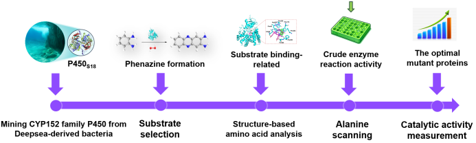

Deep sea represents the largest ecosystem on Earth yet less explored. Characterized by its extreme physicochemical conditions such as high pressure, low temperature, high salinity and chemical toxicity, deep-sea environment harbors unique microbial communities.[1] Recent studies have demonstrated that deep-sea microorganisms are significant sources of novel enzymes with unprecedented functions.[2] Enzymes produced by deep-sea microorganisms span a wide range of categories, including proteases, lipases, methane monooxygenases, PETase, P450 enzymes, etc. These enzymes exhibit unique catalytic properties under long-term adaption of the harsh environment.[1][3] Therefore, mining and engineering of the enzymes from deep-sea derived microbes could be an efficient way to obtain tool enzymes applied in green biomanufacturing.[4]
Cytochrome P450 enzymes (P450s) are a superfamily of heme-containing oxygenases found in all kingdoms of life. They have a common structural fold with a heme-iron center held by a cysteine residue, which is key for their activity.[5] P450s show great functional versatility, catalyzing diverse reactions like hydroxylation, epoxidation, dealkylation, decarboxylation, C–C bond cleavage, and even rare ones like nitration and amination.[6] This wide range of functions makes them useful in pharmaceuticals production (like drug modification and metabolism, steroid synthesis), biofuel production (like alkenes production), pollutant degradation (like xenobiotics break down), and fine chemical synthesis (like unsaturated hydrocarbons direct nitration).[7] Improving the catalytic abilities of P450s through protein design and directed evolution keeps increasing their use in sustainable biocatalysis and synthetic biology.
A vast majority of P450s rely on external redox partner(s) to transfer electrons for O2 activation, making the reaction systems complicated and uneconomical.[8,9] Noticeably, CYP152 family P450s have evolved the ability to directly use H2O2 instead of redox partners via the peroxide shunt pathway.[9,10] The representative enzymes of CYP152 family P450s, which were widely studied, were P450SPα (Sphingomonas paucimobilis), P450BSβ (Bacillus subtilis), and P450OleT (Jeotgalicoccus sp.). P450SPα and P450BSβ catalyze the α- or β-hydroxylation of fatty acids, while P450OleT> efficiently produces terminal alkenes from fatty acids by decarboxylation. Mechanistical studies have shown that these three enzymes activate H2O2 via substrate-assisted heterolysis to generate Compound I, which is the key oxidizing intermediate.[10-12] All of these traits give CYP152 family P450s high biocatalytic value in biofuels area and fine chemical synthesis.
Herein, in this study, we mined a CYP152 family P450S18 from a deepsea-derived bacteria and used semi-rational directed evolution to improve its catalytic ability toward 1,2-phenylenediamine (OPD, 1). We first evaluated the in vitro activity P450S18, and found it could transform OPD (1) to 2,3- diaminophenazine (2) through C‒N bond construction. Then the possible amino acids relating to the binding of OPD (1) in P450S18 were analyzed. Furthermore, we used alanine scanning, crude enzyme reaction activity screening to find variants with higher catalytic activities. Finally, the selected variants were purified and their catalytic efficiencies were measured, in which F295A, P246A, F176A, F292A, F82A, and Q88A showed 1.5-3.5-fold increased activity (Fig 1)
Figure 1 Flow scheme of directed evolution of P450S18